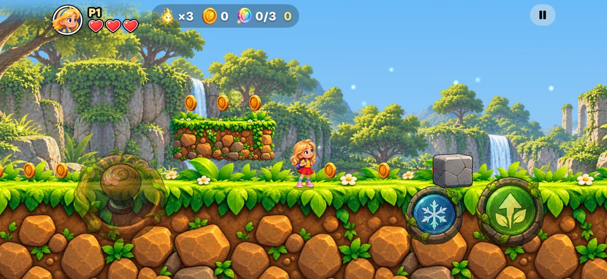
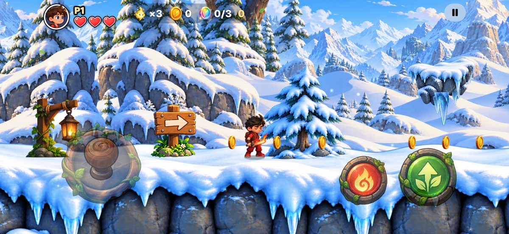
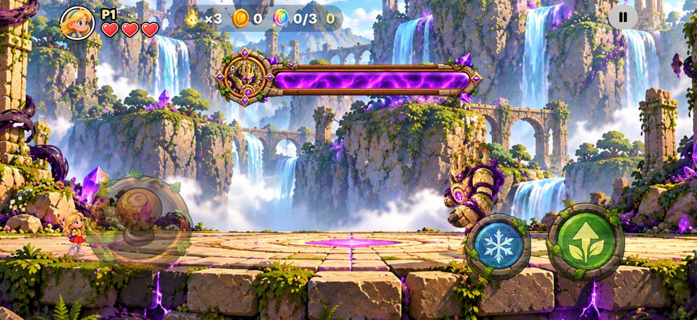
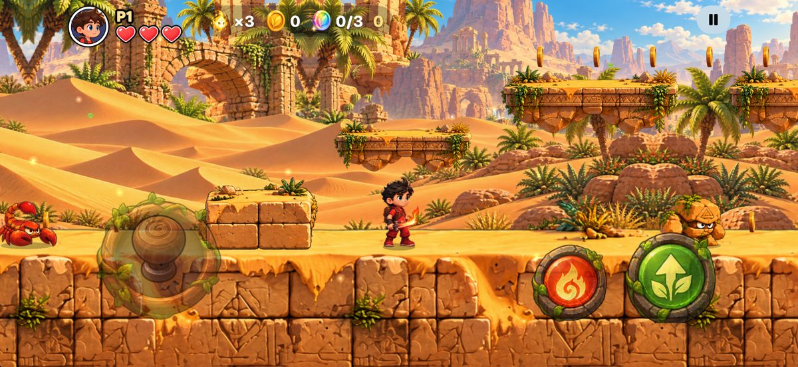
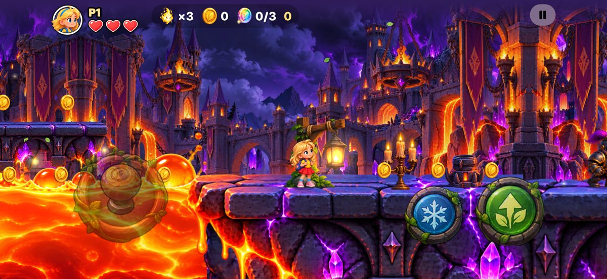
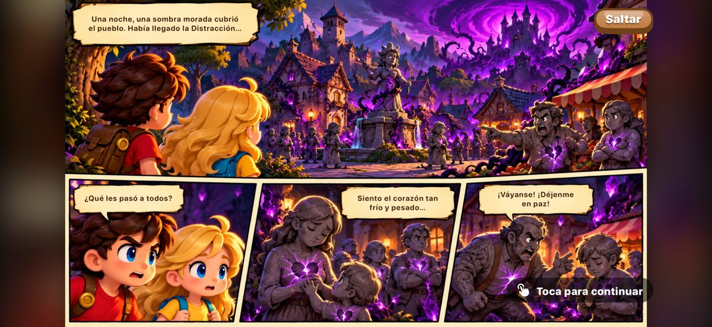

Piki y Max son una hermana y un hermano en una aventura para encontrar el Libro de la Luz. Corre, salta y usa el hielo de Piki y el fuego de Max a través de cinco mundos de cuento, solo o junto a un amigo.
Pruébalo gratis: el nivel 1 es gratis. Desbloquea toda la aventura con un solo pago. Sin anuncios.






- Cinco mundos y cinco jefes: un valle soleado, un bosque profundo, ruinas doradas en el desierto, una cumbre helada y la Fortaleza Sombría.
- Hielo y fuego: Piki congela el agua para crear puentes y Max quema las enredaderas.
- Jueguen juntos: Dúo en un mismo dispositivo con un control, o Cerca en dos iPhone.
- Hecho para la familia: un modo Explorador más fácil, una historia en cómic y un versículo de la Biblia para coleccionar en cada nivel.
- Logros y clasificaciones de Game Center, y progreso sincronizado con iCloud.